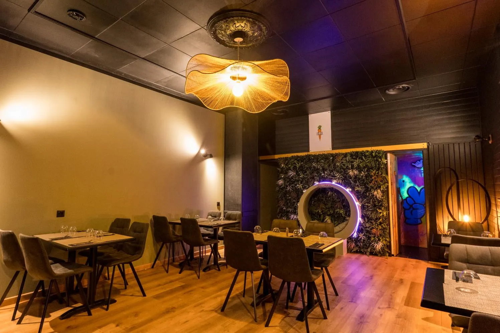
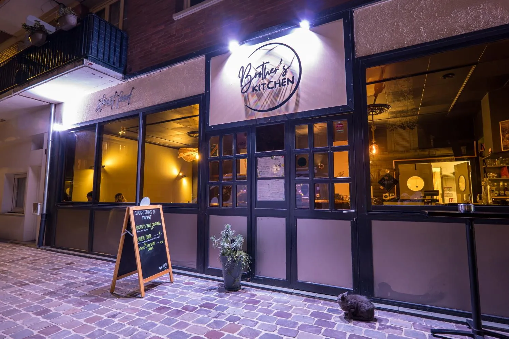
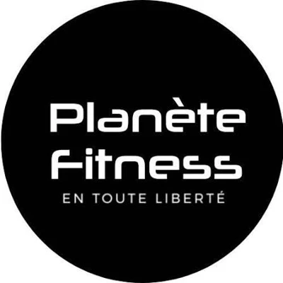

Partenaires officiels
Ils font avancer le parcours
Des entreprises du Havre qui croient au projet et s’engagent concrètement à ses côtés.
Brothers Kitchen
Restaurant street food du Havre, Brothers Kitchen accompagne Tidiane sur un terrain décisif pour un boxeur de 60 kg : l’alimentation. Le restaurant fournit des plats pour la préparation, pensés avec l’encadrement pour soutenir l’entraînement et la gestion du poids.
Au-delà de l’assiette, c’est un engagement local : une adresse du Havre qui soutient un athlète du Havre, et des moments partagés avec sa clientèle.
Le partenariat en pratique
- Soutien nutritionnel : plats fournis pour la préparation
- Contenus tournés au restaurant
- Mentions et identification sur les réseaux de Tidiane
- Bilan régulier des actions
Détails et rythme du soutien : à confirmer avec Brothers Kitchen




Brothers Kitchen · au menu de la préparation

Échanges en coursPlanète Fitness Le Havre
Une proposition de partenariat a été présentée à la salle Planète Fitness du Havre : accès à la salle et aux services de récupération, et une communication pensée pour ses adhérents et ses partenaires locaux.
Aucun accord n’est signé à ce jour. Cette fiche sera mise à jour dès que le partenariat sera confirmé.
Pistes à l’étude
- Préparation physique dans la salle
- Contenus tournés sur place
- Séances ouvertes aux adhérents
Votre logo à côté du leur
Le parcours a encore de la place pour des partenaires engagés : équipement, transport, santé, entreprises.